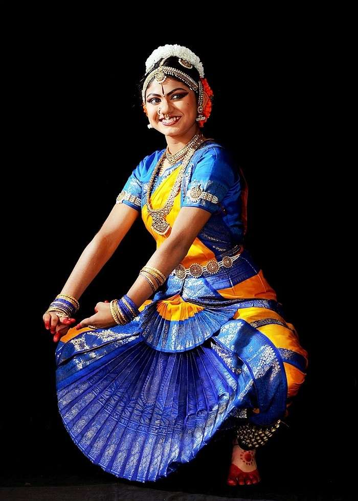

Bharatanatyam, a pre-eminent Indian classical dance form presumably the oldest classical dance heritage of India
is regarded as mother of many other Indian classical dance forms. Conventionally a solo dance performed only by women, it initiated in the Hindu temples of Tamil Nadu and eventually flourished in South India. Theoretical base of this form traces back to ‘Natya Shastra’, the ancient Sanskrit Hindu text on the performing arts. A form of illustrative anecdote of Hindu religious themes and spiritual ideas emoted by dancer with excellent footwork and impressive gestures its performance repertoire includes nrita, nritya and natya. Accompanists include a singer, music and particularly the guru who directs and conducts the performance. It also continues to inspire several art forms including paintings and sculptures starting from the spectacular 6th to 9th century CE temple sculptures. According to the Hindu tradition the name of the dance form was derived by joining two words, ‘Bharata’ and Natyam’
where ‘Natyam in Sanskrit means dance and ‘Bharata’ is a mnemonic comprising ‘bha’, ‘ra’ and ‘ta’ which respectively means ‘bhava’ that is emotion and feelings; ‘raga’ that is melody; and ‘tala’ that is rhythm. Thus, traditionally the word refers to a dance form where bhava, raga and tala are expressed. The theoretical base of this dance form, which is also referred as Sadir, trace back to ancient Indian theatrologist and musicologist, Bharata Muni’s Sanskrit Hindu text on the performing arts called ‘Natya Shastra’. The text’s first complete version was presumably completed between 200 BCE to 200 CE, however such timeframe also varies between 500 BCE and 500 CE. According to legends Lord Brahma revealed Bharatanatyam to the sage Bharata who then encoded this holy dance form in Natya Shastra. The text that consists of thousands of verses structured in different chapters divides dance in two specific forms, namely ‘nrita’ that is pure dance comprising of finesse of hand movements and gestures, and ‘nritya’ that is solo expressive dance that comprises of expressions. According to Russian scholar Natalia Lidova, ‘Natya Shastra’ elucidates several theories of Indian classical dances including that of Tandava dance, standing postures, basic steps, bhava, rasa, methods of acting and gestures.